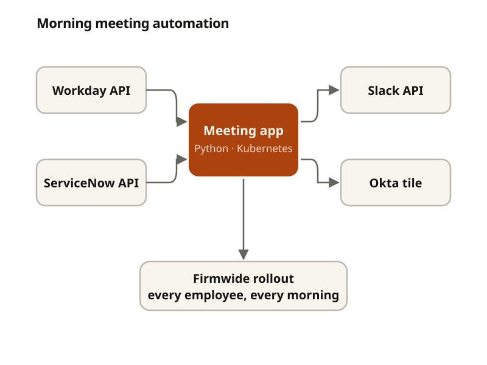

Okta Meeting Automation App
Every morning, people across the firm were assembling the same meeting by hand. I built an internal application that assembles it for them, and shipped it firmwide.
- Where
- Bain Capital
- When
- January – June 2026
- Lane
- Infrastructure & security
- Tools
- Python, Kubernetes, Okta, Workday API, Slack API, ServiceNow API

The problem
The morning meeting is a fixed ritual, and the work of preparing it was too: check who's scheduled, check what's open, assemble it, post it. None of those steps are difficult. All of them are manual, they happen before anyone has had coffee, and every one of them is a place for the day to start with stale information.
The work already lived in systems that could answer these questions directly. Nobody had connected them, so people were the integration layer.
How it works
The application runs on Kubernetes and pulls from the systems of record rather than keeping its own copy of anything:
- Workday supplies schedules, so the meeting reflects who is actually in and available.
- ServiceNow supplies live ticket and status data, which is what turned this from a calendar reminder into something useful — the meeting now opens with a real picture of what's outstanding.
- Slack is where it lands, posted automatically and updated in real time rather than assembled once and immediately going stale.
Access is through an Okta tile, which mattered more than it sounds. Putting it behind the same tile as everything else meant there was no new tool to learn, no new credential, and no separate place to remember to check — the single biggest predictor of whether an internal tool actually gets used.
A single source of truth
The ServiceNow integration was the part with the most leverage. Before, ticket state was re-entered by hand into the meeting, which meant the meeting's version and the system's version drifted apart over the course of a day — and people made calls based on whichever one was in front of them.
Syncing in real time removed the manual entry, but the real gain was that System Administration and the security team stopped reconciling two accounts of the same facts.
Getting it deployed
Building it was the first half. The second half was internal approval — a tool that touches employee schedules and ticket data at a financial firm doesn't ship because it works. It ships once the people responsible for that data understand exactly what it reads, what it writes, and who can see the result.
It was approved and rolled out firmwide, with every employee granted access to the tile. That review process taught me more about shipping software inside a regulated environment than the implementation did.
What I took from it
- The hard part of internal tooling is rarely the code. It's understanding the existing workflow well enough that people trust the replacement.
- Meeting users where they already are — an existing tile, an existing Slack channel — beats building somewhere new and asking people to come to it.
- Reading from systems of record instead of copying them is what keeps a tool honest as it ages.
Described at a high level: this is internal Bain Capital tooling, so the architecture here is deliberately general and no code or firm data is included.